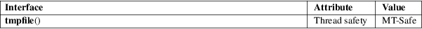

tmpfile − create a temporary file
Standard C library (libc, −lc)
#include <stdio.h>
FILE *tmpfile(void);
The tmpfile() function opens a unique temporary file in binary read/write (w+b) mode. The file will be automatically deleted when it is closed or the program terminates.
The tmpfile() function returns a stream descriptor, or NULL if a unique filename cannot be generated or the unique file cannot be opened. In the latter case, errno is set to indicate the error.
|
EACCES |
Search permission denied for directory in file’s path prefix. | ||
|
EEXIST |
Unable to generate a unique filename. | ||
|
EINTR |
The call was interrupted by a signal; see signal(7). | ||
|
EMFILE |
The per-process limit on the number of open file descriptors has been reached. | ||
|
ENFILE |
The system-wide limit on the total number of open files has been reached. | ||
|
ENOSPC |
There was no room in the directory to add the new filename. | ||
|
EROFS |
Read-only filesystem. |
For an explanation of the terms used in this section, see attributes(7).

The standard does not specify the directory that tmpfile() will use. glibc will try the path prefix P_tmpdir defined in <stdio.h>, and if that fails, then the directory /tmp.
C11, POSIX.1-2008.
POSIX.1-2001, C89, SVr4, 4.3BSD, SUSv2.
POSIX.1-2001 specifies: an error message may be written to stdout if the stream cannot be opened.
exit(3), mkstemp(3), mktemp(3), tempnam(3), tmpnam(3)